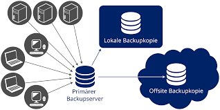

o backlog corresponde a um registro ou histórico de requisições (Backlog, tradução = trabalho em atraso). Essas requisições, via de regra, partem do próprio cliente, embora também possam ser internas. Como o registro inclui a data da requisição, ele permite controlar a quanto tempo cada uma das entradas está em aberto.
é um termo utilizado para uma atividade que consiste em realizar cópias de segurança de dados digitais de um dispositivo, como fotos, documentos, softwares ou qualquer arquivo digital, com o intuito de recuperá-los em caso de perdas acidentais ou falhas no sistema em que os arquivos estão armazenados